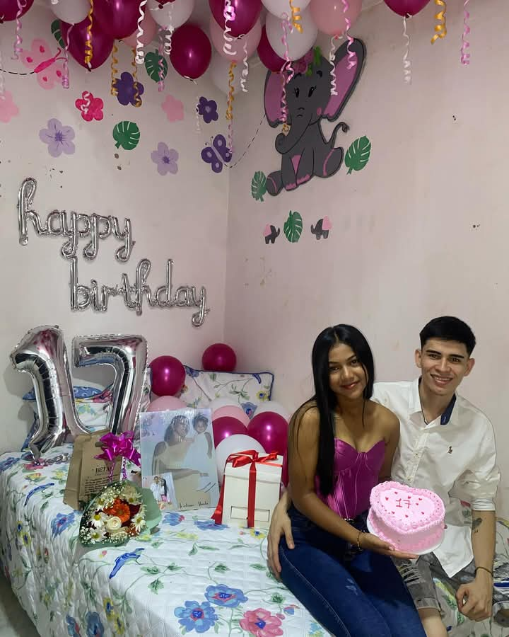
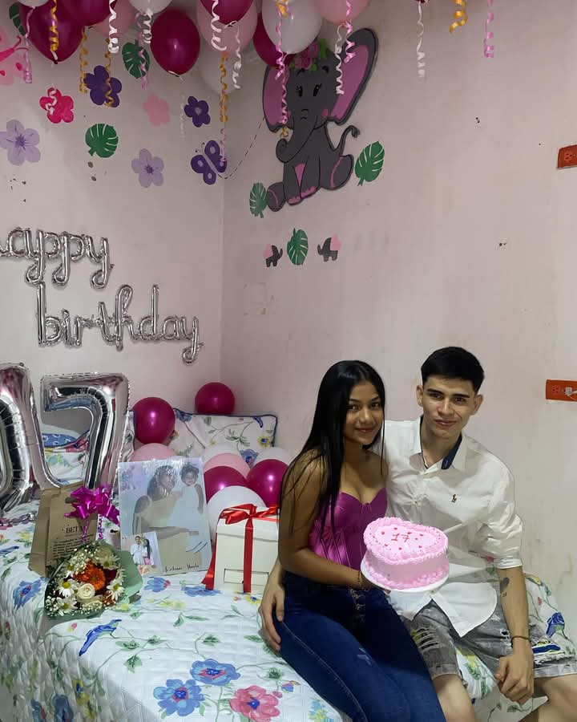

Quiero que este pequeño espacio esta pequeña pagina web, sea un reflejo de lo importante que eres para mi.
Desde que te conoci, has sido un pilar importante en mi vida, alguien con quien puedo reir y compartir cada momento tu sonrisa y esa forma unica de ver el mundo me inspira cada momento
En esta pagina con pocas fotos quiero que sepas que siempre estaras en mi corazon.


